Conseil en stratégie
commerciale
Poser le diagnostic, faire les choix et construire une feuille de route qui relie ambition, marché et exécution.
Conseil commercial & marketing
Nous accompagnons les dirigeant·es et leurs équipes à clarifier leur stratégie commerciale, faire les bons choix et transformer l'énergie en résultats durables.
Parler de votre projet ↗Là où tout commence
Quand l’activité s’accélère — ou ralentit — il faut plus qu’une bonne intuition. Il faut un cap clair, des outils qui servent vraiment et des équipes qui savent où concentrer leurs efforts.
Découvrir notre méthode →Ce que nous pouvons faire ensemble
Une intervention à la juste mesure de votre organisation : ponctuelle, structurante ou au plus près des équipes.
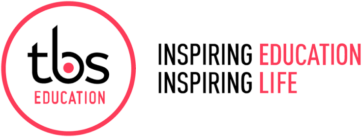
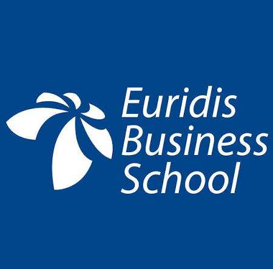
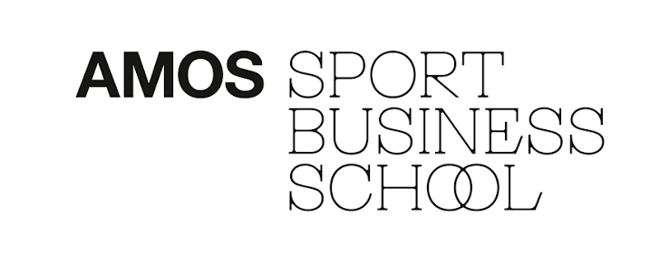
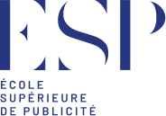
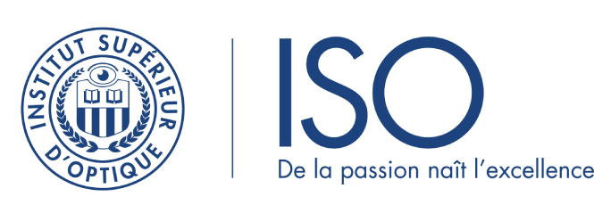
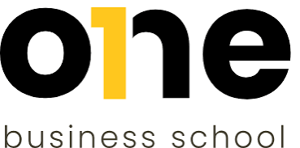
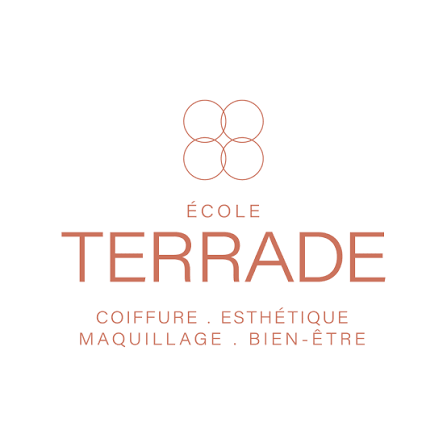
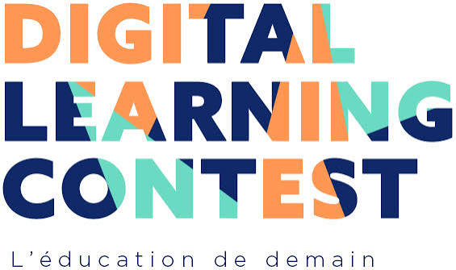
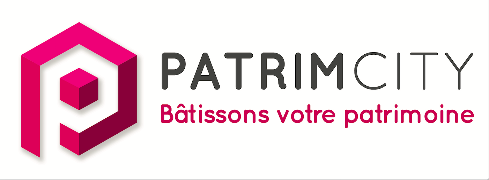
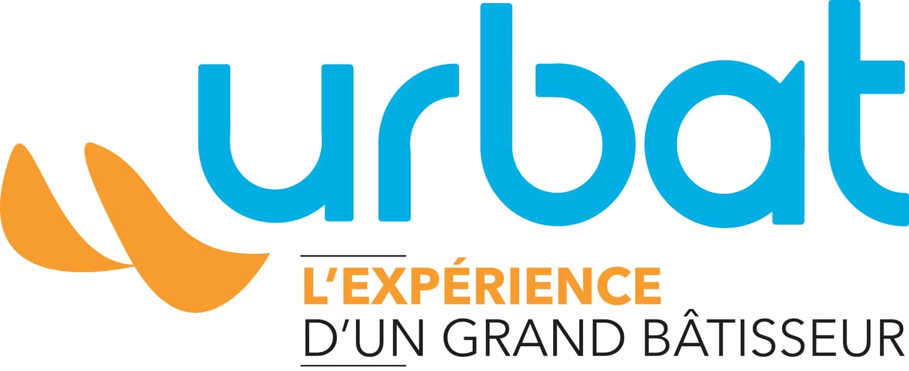
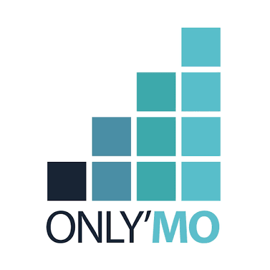
Poser le diagnostic, faire les choix et construire une feuille de route qui relie ambition, marché et exécution.
Préciser le positionnement, les cibles et le message pour devenir le choix évident de vos futurs clients.
Faire grandir les compétences par la pratique, avec des déclics immédiatement utilisables sur le terrain.
La méthode
Un audit franc de l’existant : activité, équipe, processus et opportunités.
Les priorités qui font réellement la différence, sans se disperser.
Des actions concrètes, des outils simples et un cadre partagé.
Du coaching et du suivi pour faire durer les bonnes pratiques.
L'équipe
L’équipe Sarah Landes Conseil & Formation ne se contente pas de vous livrer une recommandation de plus. Elle vous aide à choisir, à avancer avec vos équipes et à créer les conditions d’une performance commerciale durable.
Avec 18 ans d’expérience, elle associe conseil, formation et coaching pour rester au plus près de la réalité du terrain.
Faire connaissance →“
La bonne stratégie est celle que vos équipes peuvent comprendre, porter et faire vivre dès demain.
Premier échange
Parlez-nous de votre contexte, de votre équipe et de ce que vous aimeriez voir bouger. Nous vous répondons sous 48 heures.